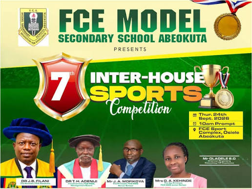

Welcome to FCE Model Secondary School
Empowering young minds for a brighter, smarter future by providing quality education.
Empowering young minds for a brighter, smarter future by providing quality education.

Inter house sports is one of our school's most exciting programs in which qualified performers are chosen to reperesent different houses.
The service serves as a poignant farewell, bringing together students, parents, teachers, and school management to reflect on years of hard work, discipline, and memorable moments within the classroom and beyond.
The program typically features a special valedictory lecture—such as the address delivered by speakers like Adegboye Rhamat Adebayo—alongside reflections from outgoing student leaders like the Senior Prefect, who express gratitude to mentors and encourage junior students to set high standards.
High-performing students across academics, leadership, and extra-curricular activities are honored with awards and prizes to celebrate their dedication and drive.
The ceremony concludes with heartfelt blessings, prayers, and formal send-offs as the graduating students transition into higher institutions and broader life endeavors.
The school was established on 23rd September, 2002 and started with 36 students comprising of 24 boys and 12 girls.
In 2007 the school presented its first batch of 12 finalists for the West African Senior School Certificate Examination (WASSCE) in May/June 2007, recording strong results.
Produced notable student representatives and winners, such as Mary Awojulu (Mathematics Olympiad South West regional finalist), FRSC quiz Ogun State championship contestants, and top placers in Children’s Day essay competitions at both local government and state levels.
National Sports Festival (KADA 2009):
National School Sports (Calabar 2011):
Recognized as an active, well-rounded secondary institution blending national curricula, character education, and boarding/academic facilities under the broader umbrella of the Federal College of Education Abeokuta.
Address:Federal College of Education,Osiele,Abeokuta,OgunState
Phone:08037907710,07038100943
Email: info@fce-abeokuta.edu.ng